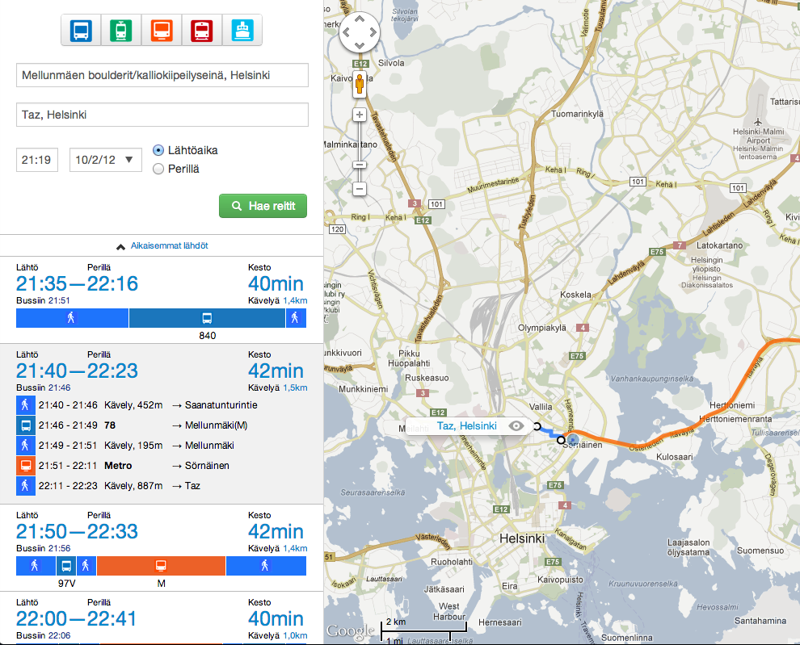

Vert.x
@teropa
HelsinkiJS October 2012
Vert.x is web scale
Vert.x is a platform for scalable, polyglot network apps for the JVM.
You could describe it as Node.js on steroids.
ihanhyväreittiopas.fi
Polyglot


Polyglot
JavaScript
load('vertx.js');
vertx.createHttpServer().requestHandler(function(req) {
req.end("Hello, world!");
}).listen(8080);
Polyglot
CoffeeScript
load 'vertx.js'
vertx.createHttpServer().requestHandler((req) ->
req.end "Hello, world!"
).listen(8080)
Polyglot
Java
import org.vertx.java.core.Handler;
import org.vertx.java.core.http.HttpServerRequest;
import org.vertx.java.deploy.Verticle;
public class Server extends Verticle {
public void start() {
vertx.createHttpServer().requestHandler(new Handler() {
public void handle(HttpServerRequest req) {
req.response.end("Hello, world!");
}
}).listen(8080);
}
}
Polyglot
Ruby
require "vertx"
Vertx::HttpServer.new.request_handler do |req|
req.response.end "Hello, world!"
end.listen(8080)
Polyglot
Groovy
vertx.createHttpServer().requestHandler { req ->
req.response.end "Hello, world!"
}.listen(8080)
Polyglot
Python
import vertx
server = vertx.create_http_server()
@server.request_handler
def request_handler(req):
req.response.end("Hello, world!")
server.listen(8080)
Core APIs
Based on Netty and Java NIO- TCP
- SSL
- HTTP, HTTPS
- WebSockets, SockJS
- File system
- Async IO with streams, pumps, buffers.
+ Java, Ruby, JavaScript libs...
Public Module Repo
Community-driven extensions- JDBC
- MongoDB
- Redis
- Web server
- Work queue
- Socket.IO
- Mailer
- Sessions, auth
Code